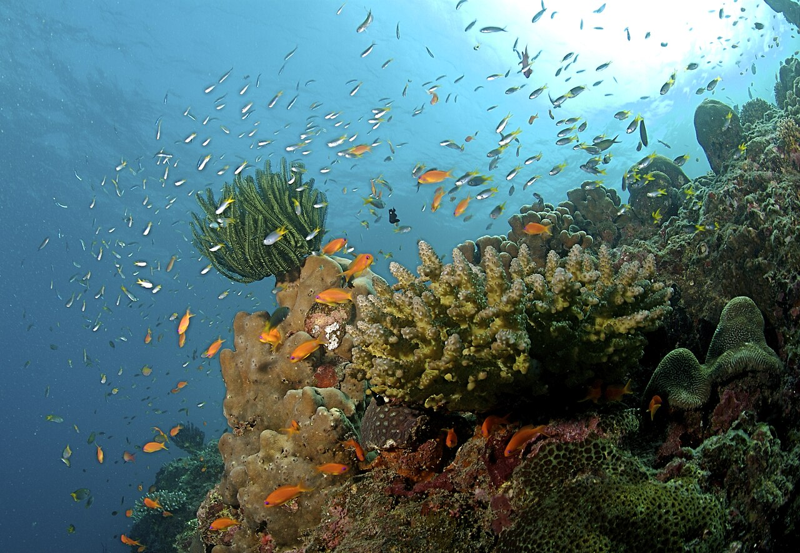

The Andaman and Nicobar Islands is a union territory of India comprising 572 islands, of which only 38 are
inhabited. The islands are grouped into two main clusters: the northern Andaman Islands and the southern Nicobar
Islands, separated by a 150 km (93 mi) wide channel. The capital and largest city of the territory, Port Blair
(officially Sri Vijaya Puram), is located approximately 1,190 km (740 mi) from Chennai and 1,255 km (780 mi)
from Kolkata in mainland India. The islands are situated between the Bay of Bengal to the west and the Andaman
Sea to the east. The northernmost point is 901 km (560 mi) from the mouth of the Hooghly River. Indira Point,
located at 6°45'10″N and 93°49'36″E on the southern tip of Great Nicobar, is the southernmost point of India.
